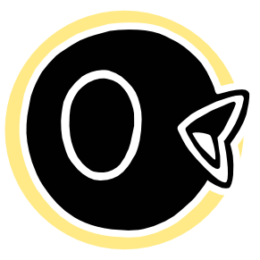
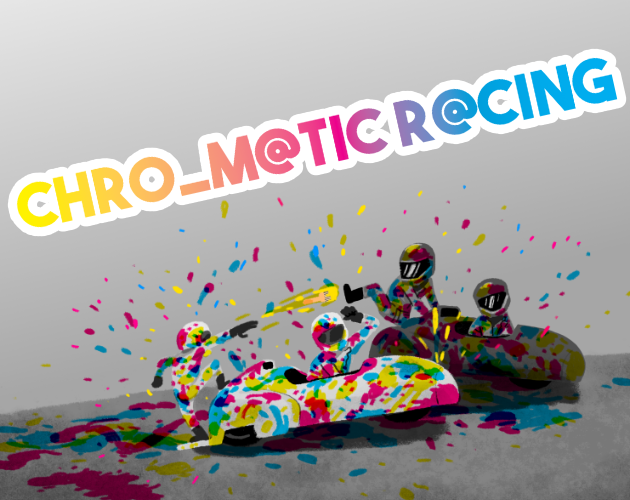
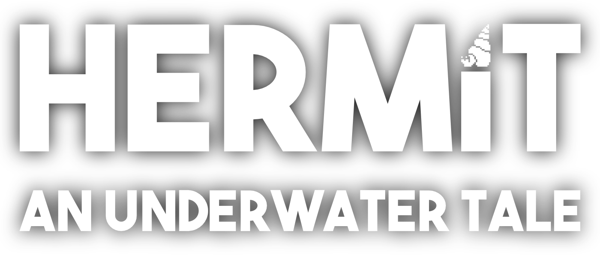

About me
With an background in Environmental and Computational Engineering and Sciences, both from the Swiss Institue of Technology in Lausanne, I had an education which allowed me to marry modeling with envrionmental problems and its applications.
My PhD in thereotical ecology at the Laboratory of Ecohydrology led by Prof. A. Rinaldo, allowed me to get a deep understanding in mathematical modeling applied to process based models, all while furthering my understanding of probabilities and statistics, and machine learning models.
Currently working in the Social [Pixel] Lab led by Prof. E. Tellman Sullivan, I am expanding my understanding of deep Learning methods applied to floods and other challenging problems linked to the environment and its impact on society.
My PhD in thereotical ecology at the Laboratory of Ecohydrology led by Prof. A. Rinaldo, allowed me to get a deep understanding in mathematical modeling applied to process based models, all while furthering my understanding of probabilities and statistics, and machine learning models.
Currently working in the Social [Pixel] Lab led by Prof. E. Tellman Sullivan, I am expanding my understanding of deep Learning methods applied to floods and other challenging problems linked to the environment and its impact on society.
Science
Current Work
Past Work
Publications
A note on the role of seasonal expansions and contractions of the flowing fluvial network on metapopulation persistence
Giezendanner, J, Benettin, P, Durighetto, N, Botter, G, Rinaldo, A
Water Resources Research, 2021
Water Resources Research, 2021
Earth and field observations underpin metapopulation dynamics in complex landscapes: Near-term study on carabids
Giezendanner, J, Pasetto, D, Perez-Saez, J, Cerrato, C, Viterbi, R, Terzago, S, Palazzi, E, Rinaldo, A
Proceedings of the National Academy of Sciences, 2020
Proceedings of the National Academy of Sciences, 2020
Beyond the patch: on landscape-explicit metapopulation dynamics
Giezendanner, J
PhD Thesis, 2020
PhD Thesis, 2020
On the probabilistic nature of the species-area relation
Zaoli, S, Giometto, A, Giezendanner, J, Maritan, A, Rinaldo, A
Journal of Theoretical Biology, 2019
Journal of Theoretical Biology, 2019
A minimalist model of extinction and range dynamics of virtual mountain species driven by warming temperatures
Giezendanner, J, Bertuzzo, E, Pasetto, D, Guisan, A, Rinaldo, A
PLoS One, 2019
PLoS One, 2019
Towards 3-D distributed odor source localization: an extended graph-based formation control algorithm for plume tracking
Soares, J M, Marjovi, A, Giezendanner, J, Kodiyan, A, Aguiar, A P, Pascoal, A M, Martinoli, A
IEEE/RSJ International Conference on Intelligent Robots and Systems (IROS), 2016
IEEE/RSJ International Conference on Intelligent Robots and Systems (IROS), 2016
Automatic quality assessment of short and long-TE brain tumour MRSI data using novel Spectral Features
de Barros, N P, McKinley, R, Giezendanner, J, Knecht, U, Wiest, R, Slotboom, J
Proc. Intl. Soc. Mag. Reson. Med, 2016
Proc. Intl. Soc. Mag. Reson. Med, 2016
Rainfall Forecasting in Burkina Faso Using Bayesian-Wavelet Neural Networks
Giezendanner, J
Master Thesis, 2015
Master Thesis, 2015
Game Development

Hobby game developer since 2014, I turned semi-professional in 2020 by co-founding Early Coffee Games. We are currently developing Hermit: an Underwater Tale.
Backstory
Game development started for me as a silly distraction and creative outlet in 2014 when Tristan Thévenoz approached me. Tristan is a classically educated artist, proficient in multiple forms of expression and passionate about the creative process. His love of video games led him to dabble in pixel art in 2013, and he was then looking for somebody to work with, on the technical aspect. This is when he approached me, and we soon became friends and started working on one silly project after the other.In our early days, we had the chance to get approached by an artist called François Burland, who was interested in hiring us to create video games for his arts installation. Over the course of three years, under the umbreall of Sharped Stone Studios , we participated in two different arts installation, each time trying to incorportate the essence of the artits' vision we were working with:
- SuperNova Martigny set in Martigny, a small town in the middle of the Alps in Switzerland,
- Atomic Bazar Fribourg
Early Coffee Games
Early Coffee Games is a game development company based in Switzerland we created in 2020 with Tristan. The company is our step into semi-professional game development.Since its creation, the company can note a couple of successes:
- In 2020 we received the ProHelvetia pre-production grant for our debut game Hermit: an Underwater Tale (see below) . This allowed us to hire Plume Oggier for creating the game's music, Gwen Buord to produce the game's sounds, as well as Jonathan Fellay for the narrative part of the adventure. 
- In 2021 the museum Espace Jean-Tinguely Nicki de Saint Phalle contatracted us to create a unique art piece complementing their exhibition. We created Chromatic Racing, an interactive piece, which invites the visitor to create a piece of art by playing the game. The piece is exposed form 2019 to 2024.
- In 2022 we were selected for the Swiss delegation to go to the Games Developers Conference (GDC) in San-Francisco, where we showed Hermit.

Hermit: an Underwater Tale is currently the studio's main focus. The game is a fast paced action game with arcade elements. You play as a hermit crab who faces waves of creeps and dangerous sea creatures.
In order to protect yourself and defeat your enemies, you will use a wide variety of empty shells as weapons. Each shell comes with a specific set of moves and attacks and will eventually break after use.
Without any shell, the hermit is fully exposed and any damage he receives will be lethal. The game features a simple core mechanic paired with a high and ever increasing difficulty over multiple levels.
In order to beat the game, you will have to combine skill, real-time resources management, smart item purchases, upgrade strategies and serious stamina in order to survive.
Unity Tools
Over the years, I developed a series of Unity tools and made them freely available, one way to give back to the community.© 2022 Jonathan Giezendanner
Source code for this website avaialable under MIT Licence on Github
Source code for this website avaialable under MIT Licence on Github